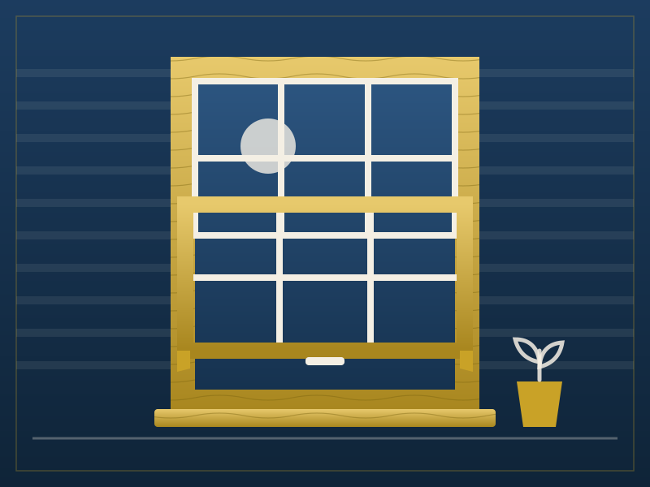
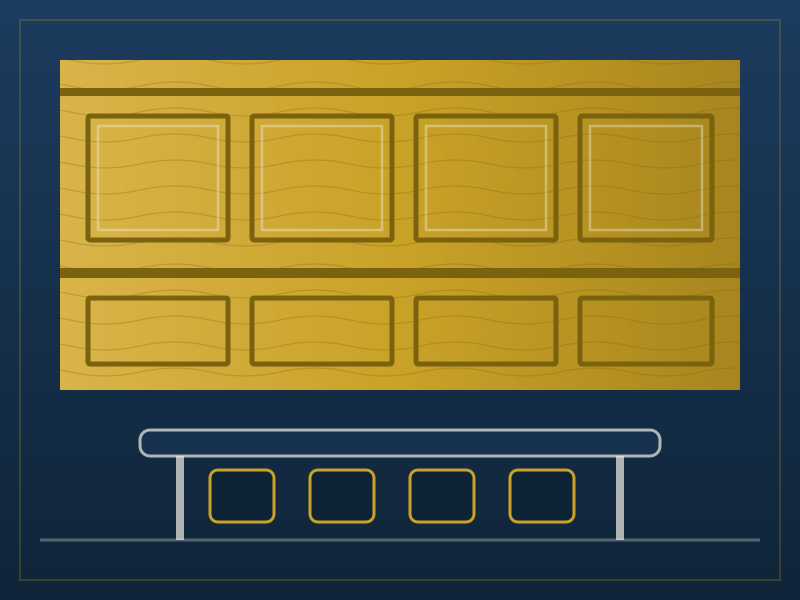

Heritage front door restoration
The original 1890s cedar door was too far gone to save, so we made a new one to match — arch, mouldings and all — from salvaged red cedar. The fanlight above it is the original, re-puttied and rehung.
The gallery
Illustrated here; job photos available at the workshop and on every written quote.
The original 1890s cedar door was too far gone to save, so we made a new one to match — arch, mouldings and all — from salvaged red cedar. The fanlight above it is the original, re-puttied and rehung.

A closed-stringer flight in blackbutt with a turned newel and a handrail shaped by hand at the bench. Measured on a Tuesday, installed three weeks later to the millimetre.

Service counter, wall shelving and banquette seating for a corner cafe, machined from spotted gum. Built in the workshop over a fortnight and fitted in two days between trades.

Eight double-hung sashes rebuilt with new cords, parting beads and weather seals. The original sashes were re-used wherever the timber was sound — about two-thirds of them made the cut.

Full-height panelling and concealed storage for a waterfront boardroom, set out so every panel line lands square on the door and window openings. The details nobody notices are the ones we sweat over.

A 6.4-metre tallowwood bar top finished in hard-wax oil over a slatted blackbutt front, with a brass foot rail. Built for a local ten minutes from the workshop — we drink there now.